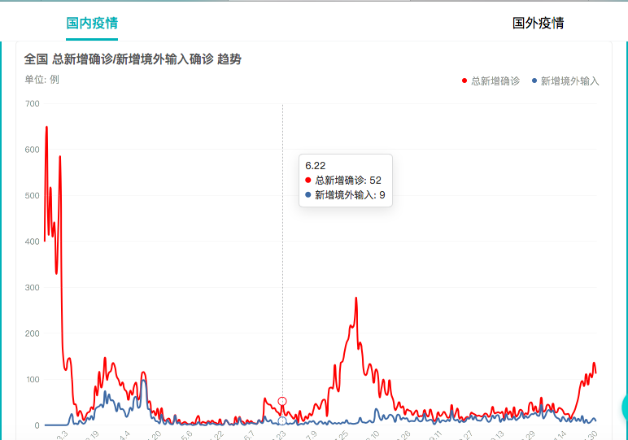
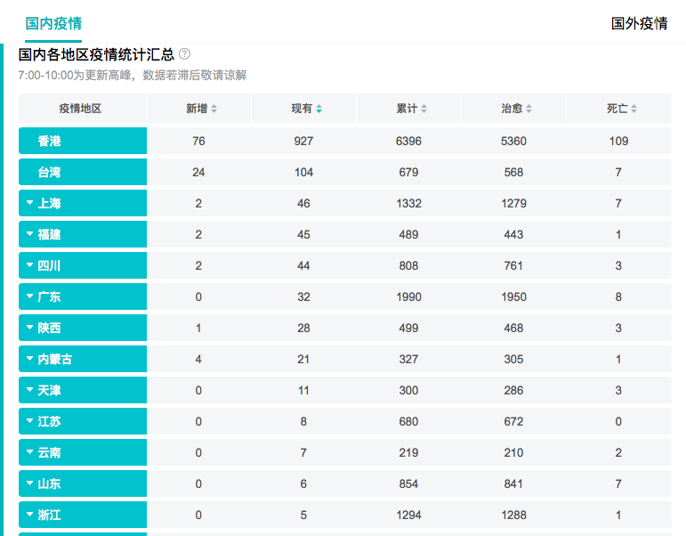

背景介绍

2020年的春天注定是不平凡的，一场突如其来的新冠肺炎疫情，让这个春天有点“酸”有点“涩”，无数驰援武汉的“战士”，坚守岗位的每一个平凡的人，他们成为了这个春节最亮眼的“逆行者”，他们用一腔热血、一份初心、一己责任扛起了战“疫”的重担，为万家团圆负重前行。1月20日晚，国家主席习近平对新型冠状病毒感染的肺炎疫情作出重要指示，强调要把人民群众生命安全和身体健康放在第一位，坚决遏制疫情蔓延势头。同心山成玉，协力土变金。在这一场没有硝烟的新冠肺炎疫情中， 没有旁观者，我们都是参与者，只有全国一条心，拧成一股绳，携手一起拼，才能够凝聚磅礴力量，赢得最后的胜利。 在此情况下，一种疫情可视化工具则极为必要，能让民众对当前疫情有一个直观的了解，于是作为国内搜索引擎龙头，网络的门户，百度推出了这款新冠疫情可视化分析。(https://voice.baidu.com/act/newpneumonia/newpneumonia/?from=osari_aladin_banner)
可视化分析

该案例首页将疫情分为国内国际两部分，我们以国内为例。
该案例将不同状况的人员人数用不同颜色的数字表达，用颜色标示严重程度，将人们最关注的部分放到前面，并且使用鲜艳的颜色引起重视。下方的现有感染人数图也是如此，用红色的深浅标示现有确诊人数，并且可以 点击具体的省份了解详细信息。
之后使用折线图表示总新增确诊/新增境外输入确诊趋势，并用不同颜色表示境内/境外人员，使表示更加直观。而且可以选择时间点对其进行精细的查看。
最后则是全国各地疫情总汇表格，详细的给出了当前疫情的精确情况。由于纯数据可能比较难以认知，所以可以选择按照不同情况进行排序，比如确诊最多等。
亮点介绍
一、该案例使用色彩丰富，将不同的情况用颜色分开，并且也用颜色表示严重程度。红色表示较为严重的人员组成 ，而蓝色表示已经痊愈的人员，黑色则为不幸去世的人员。在全国图中则使用从深到浅的红色表示现有感染人数。
二、将重点内容放在前面，较为次要的内容放在后面，使得重点信息一眼能够看到；将较为直观的图表放在前面，将较为繁杂的图表放在后面， 可以一下抓住人们的眼球，引导受众阅读较为抽象的数据。
三、整体色调较浅，背景为蓝绿色，会非常让人容易联想到医院、医疗，贴合主题，而且清爽的色调也能让受众一下聚焦到关键信息，防止喧宾夺主。